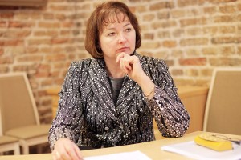
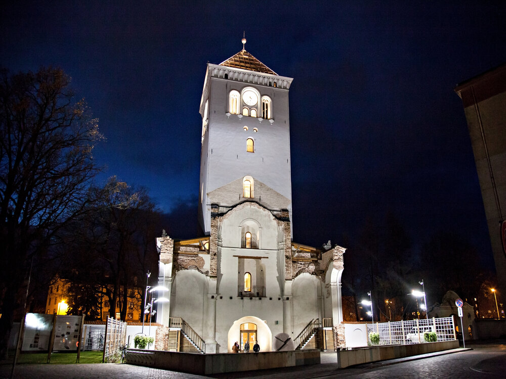
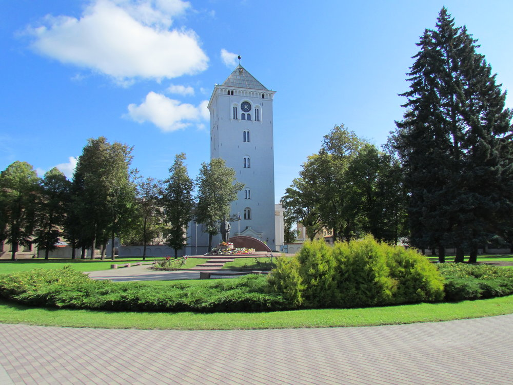
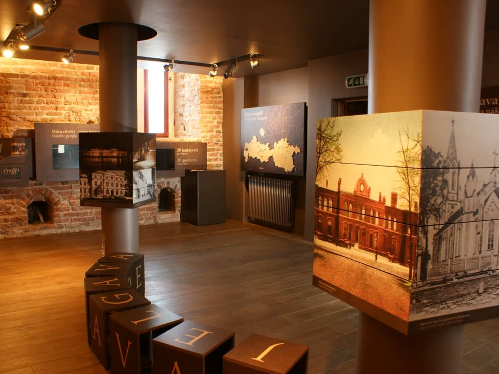
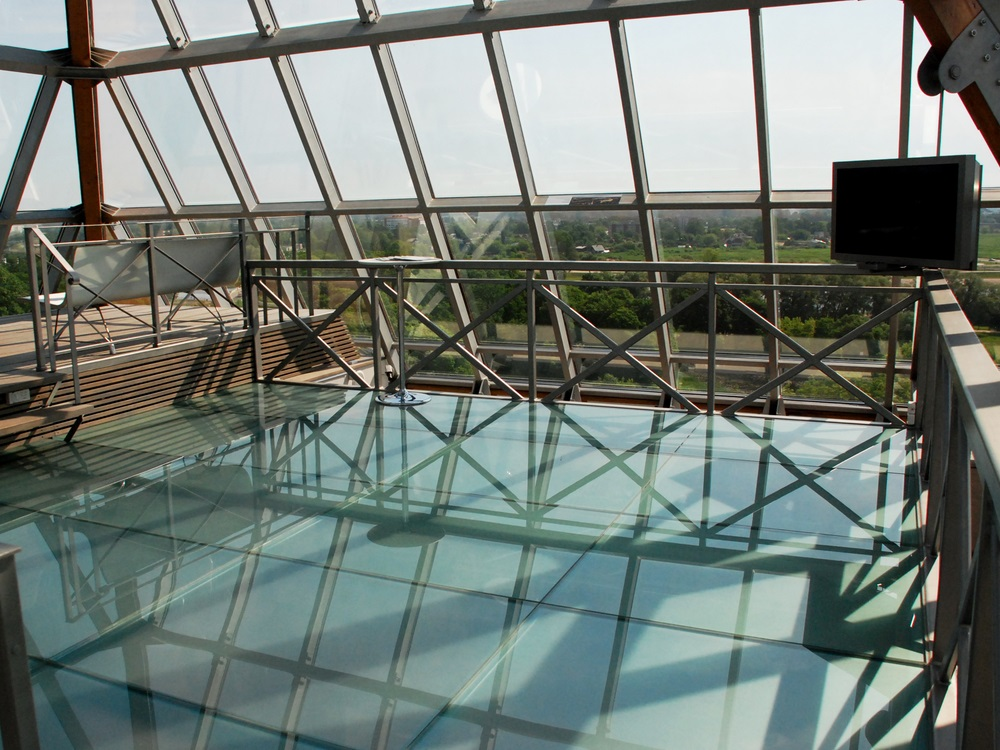

Ar Svētās Trīsvienības baznīcas torņa atklāšanu Jelgava tūrisma jomā piedzīvojusi tādu kā atdzimšanu, jo pilsēta ir atguvusi vienu no saviem simboliem. Turklāt ik gadu tiek sakārtots vēl kāds objekts, kurš varētu būt uzmanības vērts ne tikai jelgavniekiem, bet arī pilsētas viesiem.
Jautājums: Kādas izmaiņas līdz ar centra izveidi jūs redzat, lai Jelgava no tūristu viedokļa nebūtu tikai vieta starp Rīgu un Rundāli?
Atbilde: Jau tas vien, ka tūristu grupas no Rīgas uz Rundāli dodas caur Jelgavu, nevis Bausku, ir labi, jo mēs jau esam iekļauti tūrisma maršrutos. Tagad tikai pakāpeniski jāpanāk, lai šie cilvēki Jelgavā uzkavētos ilgāk. Sadarbībā ar Jelgavas un Ozolnieku novadu veidojam piedāvājumu, kurš varētu ieinteresēt potenciālos tūristus. Sākumā tā varētu būt divu trīs stundu ekskursija pa pilsētas un novadu ievērojamākajiem objektiem, bet vēlāk varētu piedāvāt arī dienas programmu. Lielā mērā gan tas būs atkarīgs no tūrisma operatoriem jeb uzņēmējiem, vai spēsim piedāvāt ko oriģinālu, jo tūrisma nozarē visu laiku gaida kaut ko jaunu un nebijušu. Šī ir mūsu iespēja, kura jāizmanto.
Jelgavas Svētās Trīsvienības baznīcas tornis Sv. Trīsvienības baznīca bija viena no pirmajām luterāņu draudzes mūra baznīcām, kura tika uzcelta Eiropā, turklāt, baznīca uzskatāma arī par pirmo mūra celtni Jelgavā.



